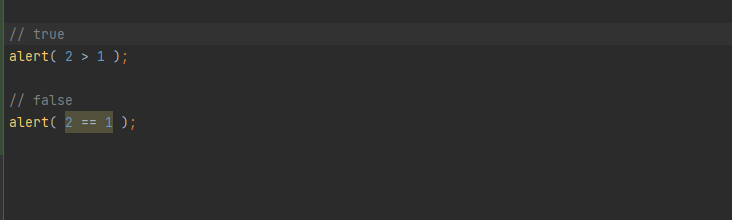
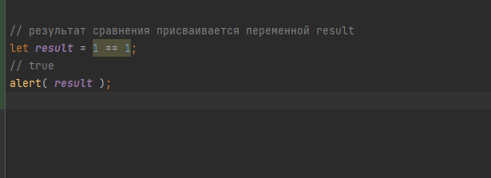
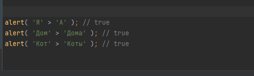
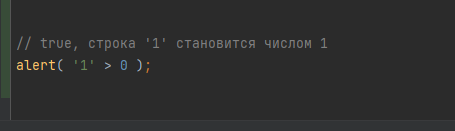

Все операторы сравнения возвращают значение логического типа:
true – означает «да», «верно», «истина».
false – означает «нет», «неверно», «ложь».

Результат сравнения можно присвоить переменной, как значение:
строки сравниваются посимвольно
При сравнении значений разных типов JavaScript приводит каждое из них к числу.
